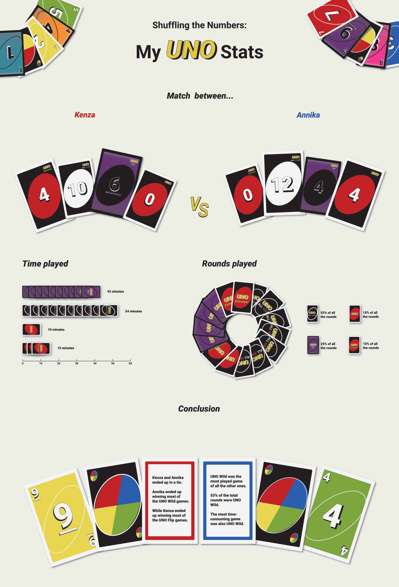
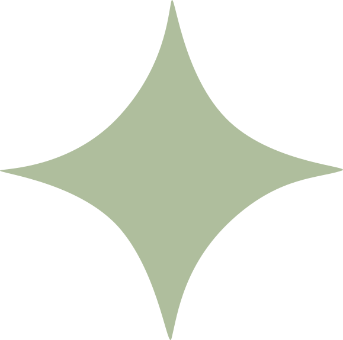
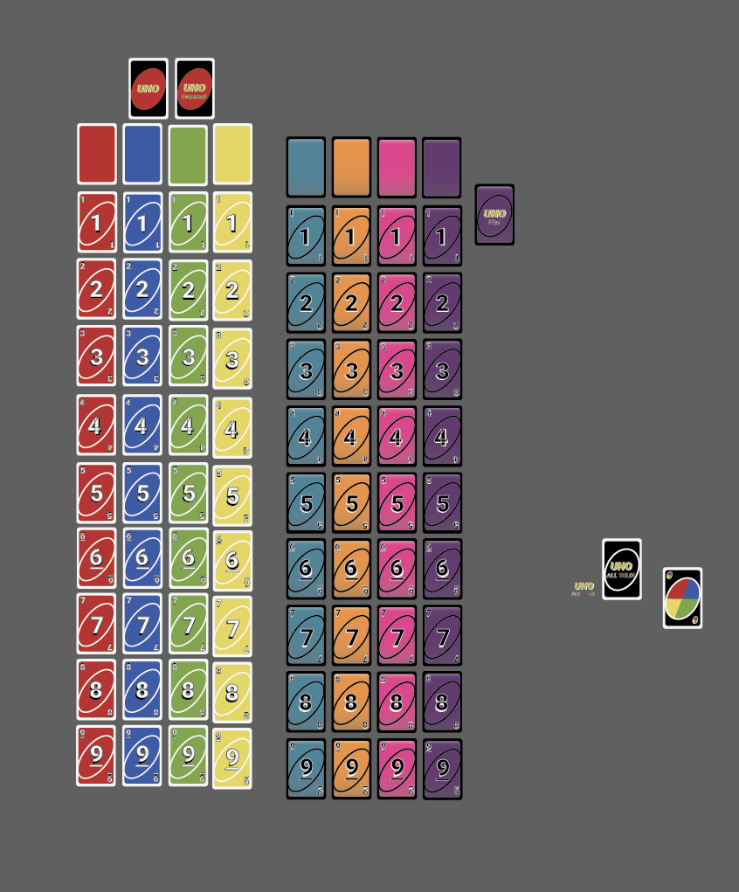

Opdracht
Voor het vak Design 2 aan MCT bij Erasmushogeschool Brussel kregen we de opdracht om een infografiek te maken op basis van data die we gedurende vier dagen verzamelden. Het onderwerp mochten we zelf kiezen. Ik koos voor verschillende versies van Uno, zoals Uno Wild en Uno Flip.
Ik hield bij hoe vaak mijn moeder en ik wonnen en verwerkte deze gegevens vervolgens in een infografiek.
Onderzoek
Voor deze opdracht zocht ik op Pinterest naar leuke en duidelijke manieren om een infografiek vorm te geven. Zo kwam ik op het idee om elementen van Uno-kaarten te gebruiken, zoals een cirkeldiagram, om mijn data op een visuele manier voor te stellen.

Proces
Ik maakte de verschillende Uno-kaarten na in Adobe Illustrator om ze later te gebruiken in mijn infografiek.
Eindresultaat
Het eindresultaat was een infografiek in de stijl van Uno-kaarten, waardoor de data op een speelse en opvallende manier werd gepresenteerd.